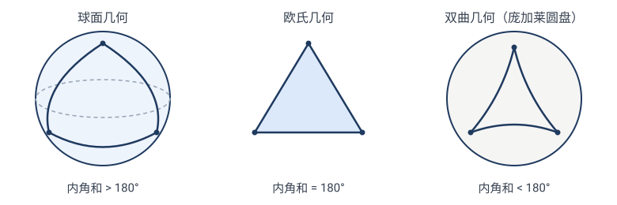
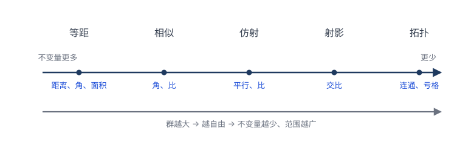
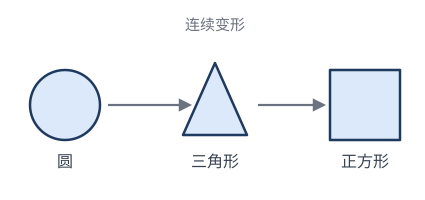

爱尔兰根纲领：一句话统一全部几何
7.11872 年的几何学：一盘散沙
19 世纪中叶的几何学，是一团混乱的繁荣。
- 欧几里得几何还在教；
- 射影几何（德沙格、帕斯卡的后继者，如彭赛列、施泰纳）蓬勃发展，自认比欧氏更"基本"；
- 仿射几何、相似几何各有信徒；
- 非欧几何（罗巴切夫斯基、波尔约、黎曼）横空出世，动摇了"平行公设"两千年的地位；
- 微分几何（高斯、黎曼）研究曲面上的几何，方法完全不同；
- 庞大杂乱的"度量几何"派系林立。
每派都有自己的概念、定理、教材，彼此鸡同鸭讲。一个根本问题悬而未决：
到底什么是"一种几何"？凭什么说射影几何和欧氏几何是"两门"几何，而不是同一门的两个部分？
这个问题不解决，几何学就永远是一堆互不连通的碎片。
7.2克莱因的钥匙：群
年轻克莱因的洞察，借来了一个30 年前刚诞生的强大工具——群。
群的概念来自伽罗瓦（Évariste Galois, 1811–1832，20 岁死于决斗）。伽罗瓦研究"方程什么时候能用根式求解"时发现：关键不在方程本身，而在它的根的对称性——根之间可以互相替换而保持代数关系，这些"允许的替换"组成一个群（伽罗瓦群）。群的"大小"决定了方程能不能解（这套故事第 8 章细讲）。
💡 回顾：我们早在 2.5 节就见过群了。那里我们把"全体等距变换"放在一起、配上"复合"运算，逐条验证了封闭、结合、单位、逆——它们构成**等距群 $E(2)$**，还看到子群 $\mathrm{SO}(2)\subset E^{+}(2)\subset E(2)$。所以"群"对读者已经不是新词，记住那句白话定义即可：一组变换 + 复合运算 + 四条公理（封闭、结合、有恒等、有逆）= 群。
克莱因的天才不在"发明群"（那是伽罗瓦），而在一次层次跃迁：
伽罗瓦：给定一个方程，它的根有什么样的对称群？ 克莱因：给定一个群，它定义一门几何。
换句话说，克莱因把问题反过来了——不再问"这个图形有什么对称"，而是**先选一个群 $G$，再问"在 $G$ 的所有变换下，什么不变"**。不同的选择，得到不同的几何：
- 选 $G=E(2)$（等距群）→ 欧氏几何（不变量：距离、角、面积）；
- 选 $G=$ 相似群 → 相似几何（不变量：角、长度比）；
- 选 $G=$ 仿射群 → 仿射几何（不变量：平行、共线比）；
- 选 $G=$ 射影群 → 射影几何（不变量：交比）；
- 选 $G=$ 同胚群 → 拓扑（不变量：连通性、亏格）。
同一个平面，换一群，就换一门几何。 这就是下一节"爱尔兰根宣言"的核心。
✏️ 一个让人安心的事实：上面每"一级"变换都各自成群——验证方法和 2.5 节对等距做的一样（复合封闭、有恒等、有逆），只是把"保距"换成"保角/保平行/保共线/保连续"。例如两个仿射 $\mathbf{x}\mapsto M_1\mathbf{x}+\mathbf t_1$ 和 $\mathbf{x}\mapsto M_2\mathbf{x}+\mathbf t_2$ 的复合 $\mathbf{x}\mapsto M_2M_1\mathbf{x}+(M_2\mathbf t_1+\mathbf t_2)$ 还是仿射（$M_2M_1$ 仍可逆）。所以每一级几何都有自己的群，群与群之间还一个套一个（第 7.4 节）。
7.3核心宣言：几何 = 群 + 不变量
克莱因在爱尔兰根纲领里给出的，是这样一个定义（用现代语言表述）：
一种"几何"，由两样东西完全决定：
- 一个集合 $S$（研究的对象，比如平面上的点）；
- 一个作用在 $S$ 上的变换群 $G$。
**这门几何要研究的，是 $G$ 的不变量**——也就是那些在 $G$ 的所有变换下都不变的性质。
把不同想法翻译成这个定义：
| 几何 | 集合 $S$ | 变换群 $G$ | 关心不变量 |
|---|---|---|---|
| 欧氏几何 | 平面 | 等距群 | 距离、角、面积 |
| 相似几何 | 平面 | 相似群 | 角、长度比 |
| 仿射几何 | 平面 | 仿射群 | 平行、共线比 |
| 射影几何 | 射影平面 | 射影群 | 交比、共线/共点 |
| 拓扑 | 平面 | 同胚群 | 连通性、亏格、欧拉示性数 |
| 球面几何 | 球面 $S^2$ | 绕球心旋转群 | 大圆距离、球面角 |
🎯 一句话：几何学 = 变换群 + 该群的不变量。 不同的群 → 不同的几何。
注意上表悄悄多了一行——球面几何。它提醒我们一个前几章藏起来的事实：**"集合 $S$"不只是平面。换一片"地"，配一个合适的群，就是一门新几何。最震撼的例子是非欧几何**：
- 球面几何（地是球面 $S^2$，群是绕球心的旋转）：球面上的"直线"是大圆（如赤道、经线）。三角形内角和 **$>180°$**——而且没有平行线，任何两个大圆都相交。
- 双曲几何（地是庞加莱圆盘，群是双曲等距变换）："直线"是垂直于边界的圆弧。三角形内角和 **$<180°$——而且过直线外一点有无穷多条**平行线。
把欧氏、球面、双曲摆在一起，就是著名的"非欧三巨头"：

同一句话（研究变换群的不变量），换三片地，就得到三种结论截然不同的几何。更妙的是——球面和双曲都"进得来"爱尔兰根纲领（它们都有足够大的等距群，见习题 7.4），只有一般弯曲的黎曼流形（地太"不均匀"，没有大群）才进不来（见 7.7 节）。所以"换地"的自由度很大，纲领的边界在第 7.7 节。
这一下子解决了 7.1 的混乱：原来"两门几何"的区别，就是变换群的区别。射影几何和欧氏几何之所以不同，因为它们的变换群（射影群 vs 等距群）不同。混乱变成了秩序。
手算一个例子：欧氏几何的不变量
光看定义还是抽象。我们用欧氏几何（$G=$ 等距群 $E(2)$）把"在 $G$ 的所有变换下都不变"这句话每个字都摸到。
主角：一个 3-4-5 直角三角形 $\triangle ABC$，$A=(0,0),\; B=(3,0),\; C=(0,4)$。在 $G$ 里挑一个变换——绕原点逆时针旋转 $90°$，即 $(x,y)\mapsto(-y,x)$：
查"边长"——它顶住了吗？
| 边 | 变换前 | 变换后 |
|---|---|---|
| $AB$ | $3$ | $A'B'=3$ ✓ |
| $AC$ | $4$ | $A'C'=4$ ✓ |
| $BC$ | $\sqrt{3^2+4^2}=5$ | $\sqrt{4^2+3^2}=5$ ✓ |
三边纹丝不动。再换 $G$ 里别的成员——平移 $(x,y)\mapsto(x+1,y+2)$、关于 $y$ 轴反射 $(x,y)\mapsto(-x,y)$——边长还是不变。**"距离"顶住了 $G$ 里每一个变换**，所以它是 $E(2)$ 的不变量。这就是欧氏几何真正研究的主角。
✏️ 反例：光顶住一个变换不算数。 那"$A$ 到原点的距离"算不变量吗？绕原点旋转 $90°$，$A=(0,0)$ 还在原点，距离 $0$，没变——看起来"不变"。但换一个 $G$ 里的变换：平移 $(x,y)\mapsto(x+1,y)$，$A$ 跑到 $(1,0)$，到原点的距离从 $0$ 变成 $1$。变了！ 所以"到原点的距离"顶不住 $E(2)$ 里的平移，不是 $E(2)$ 的不变量——它只是"绕原点旋转群"这个更小子群的不变量。
这句话的内涵，全在"所有"两个字：
不变量不是"在某一个变换下不变"，而是"在 $G$ 里随便挑哪一个都不变"。
$G$ 越大（变换越多），能同时顶住的量越少——这就是下一节"群越大，不变量越少"的来历。所以欧氏几何不关心"$B$ 的坐标是 $(3,0)$ 还是 $(0,3)$"（这会变），只关心"边长 $3$、内角 $90°$、面积 $6$"（这些不变）。全等判定 SSS 正是这套思想的结晶：边长这个不变量把三角形在等距群下的"身份"定死了——三边一对上，就存在 $G$ 里的某个变换把两者互变，它们就是"同一个"三角形。
7.4几何的层级：群越大，不变量越少
注意一个关键事实：前面那些群，一个套一个（子群关系）：
每个群都是后一个的子群（更"小"、约束更多）。这件事有深刻推论：
群越大（变换越多），不变量越少，但结论越普适（适用范围越广）。
为什么"群大 ⟹ 不变量少"？因为"不变量"要顶住群里每一个变换。群里变换越多，要同时满足的条件越苛刻，能"幸存"的量自然越少。
为什么"不变量少 ⟹ 结论更普适"？因为不变量是所有这些变换都承认的性质——变换越多，承认这个性质的范围越广，结论越"放之四海皆准"。
一个数轴图

7.5同一个问题，五种答案
理解层级最好的办法，是看同一个问题在不同几何里的答案。我们问："圆和三角形是同一个东西吗？"
- 欧氏几何：当然不同。圆无边、三角形有三边；任何等距都保不住"边数"。
- 相似几何：仍不同（相似保形，圆还是圆，三角形还是三角形）。
- 仿射几何：仍不同（仿射把圆变椭圆，但不会变成三角形）。
- 射影几何：仍不同（射影把圆变椭圆/抛物线/双曲线，但不会变三角形）。
- 拓扑：是同一个东西！ 圆和三角形的边界都是一条简单闭曲线（不交叉、闭合），可以连续变形（把圆"捏"成三角形）。在拓扑眼里，圆 = 三角形 = 正方形 = 椭圆。

每一次"放宽"（群变大），原本"不同"的东西变得"相同"。
✏️ 再看"椭圆和圆"：
- 欧氏：不同（不能等距互变）；
- 仿射：相同（拉伸就能互变，第 4 章）；
- 拓扑：相同（都是闭曲线）。
"相同"还是"不同"，取决于你站在哪一级。
拓扑的不变量举例
拓扑是最"狂野"的一级（允许任意连续变形，像揉橡皮泥，只要不撕裂不粘合）。它丢失了几乎所有度量，只剩"最顽固"的几个性质：
- 连通性：一块还是几块？（"0" 连通，"8" 两块相交，"O" 一块有洞）。
- 洞的个数（亏格）：球面 $0$ 个洞，甜甜圈 $1$ 个洞，双圈 $2$ 个洞。
- 欧拉示性数 $\chi = V-E+F$（顶点数 - 边数 + 面数）。
✏️ 欧拉示性数：立方体 $V{=}8,E{=}12,F{=}6$，$\chi=8-12+6=2$。四面体 $V{=}4,E{=}6,F{=}4$，$\chi=4-6+4=2$。八面体 $V{=}6,E{=}12,F{=}8$，$\chi=6-12+8=2$。**所有"球面状"的多面体，$\chi$ 都是 $2$！** 因为它们拓扑等价于球面。而甜甜圈状的多面体 $\chi=0$。$\chi$ 是拓扑不变量——连续变形改不了它。这是拓扑层级里"交比"级别的基本量。
7.6不变量哲学：剥去表象，留下本质
爱尔兰根纲领背后，是一种深刻的认识论：
一个东西的"本质"，是它在所有允许的变化下都不变的那部分。表象（会变的）不重要，本质（不变的）才重要。
这种思想在数学内外都威力巨大：
- 物理学：一个实验在中国做和在美国做，结果一样（空间平移不变）→ 推出动量守恒（诺特定理）。"对称性"↔"守恒律"——这是爱尔兰根纲领思想在物理学的回响（第 9 章详谈）。
- 计算机视觉：识别一只猫，不管它旋转、缩放、遮挡——要找的是"猫"的不变特征，而不是某个特定姿态。
- 不变量理论（代数）：研究多项式在某些变换下不变的组合，是 19 世纪代数的核心，直接通向现代代数几何。
💡 元思想："找不变量"是一种通用解题/认知策略——面对一个变化的系统，别盯着变化的部分发愁，去揪住那个"守恒"的量。它往往是问题的钥匙。
7.7纲领的边界：什么没被统一
克莱因的纲领极其成功，但不是几何的全部。它统一了"齐性"几何（有足够多对称变换的空间），但有两类对象不在框架内：
- 黎曼微分几何：黎曼研究"任意弯曲"的曲面/空间，它们没有大群的对称变换（一般 curved 空间除了恒等变换没别的等距）。克莱因的纲领要求一个大群，所以黎曼几何的"局部"视角进不去这个框架。后来（20 世纪，嘉当的"几何子流形"理论）才把两者调和。
- 代数几何 / 度量数论：研究方程定义的图形，方法更代数，不和变换群直接挂钩。
所以爱尔兰根纲领是一座大山，不是全部山脉。但作为"用变换统一经典几何"的纲领，它至今是几何学的骨架。
7.8历史意义：群征服几何
爱尔兰根纲领的真正分量，在于它标志着"群"这个概念完成了对数学的全面征服：
- 1830 伽罗瓦：群征服代数（方程论）；
- 1872 克莱因：群征服几何（爱尔兰根纲领）；
- 之后：群征服物理（晶体、相对论、粒子物理的规范对称）。
“用群来组织一门学科”成了现代数学的范式。一个 23 岁年轻人的就职演讲，定义了之后 150 年几何学的语言。
💡 延伸专题：这个 23 岁的年轻人是谁？他和北欧的索菲斯·李如何联手？那份就职宣言为何“延迟 20 年”才被世界认可？见 纲领的诞生：克莱因、李与 1872 年。
下一章我们看变换思想最直观的应用——对称性：一个图形的"对称"，正是"保持它不变的变换"组成的群。
下一章：第 08 章 · 对称性与群
🧩 本章习题
概念题 7.1 分类
下列性质分别属于哪一级几何的不变量（从欧氏、相似、仿射、射影、拓扑里选最"弱"的那级）？ (a) 三角形内角和 $180°$；(b) 三点共线；(c) 线段长度；(d) 两条直线平行；(e) 圆的周长；(f) 一条闭曲线把平面分成内外两块（若尔当定理）。
查看解答 / 提示
答：(a) 相似（角不变量，但长度没了）；(b) 射影（最弱的一级仍保共线）；(c) 欧氏；(d) 仿射；(e) 欧氏；(f) 拓扑。关键：把每个性质归到"最弱仍保住它"的那级。
手算题 7.2 欧拉示性数
计算下列多面体的 $\chi=V-E+F$：(a) 三棱柱；(b) 一个"框"形（四棱柱挖掉中间一个小四棱柱贯通）。
查看解答 / 提示
答：(a) 三棱柱 $V=6,E=9,F=5,\chi=6-9+5=2$（球面状）。(b) 框形拓扑等价于甜甜圈（一个洞），$\chi=0$。数一下：外框 8 顶点 + 内框 8 顶点 = 16；边数较多，但 $V-E+F$ 必等于 $0$（甜甜圈状）。
思考题 7.3 "相同"还是"不同"
字母 R 和字母 Я（R 的镜像）在各级几何里是否相同？
查看解答 / 提示
答：在欧氏、相似、仿射、射影各级里都相同。关键是——反射是等距（$\in E(2)$），而 $\mathbf{R}$ 与 $\mathbf{Я}$ 正好互为镜像，所以存在等距（反射）把它们互变。判断"相同"只看有没有该级变换连接它们，反射是合法的等距，于是在欧氏这一级它们就已经"相同"了。
真正把它们区分开的不是这些几何，而是定向（手性）——可定向不是欧氏不变量（$E(2)$ 含反射，会把定向翻掉），它只是更小子群（正向等距 $E^{+}(2)$）的不变量。所以：在完整欧氏几何里 $\mathbf{R}=\mathbf{Я}$；只有当你只许正向运动（不许翻面）时，它们才"不同"。这道题提醒——"相同"取决于你选的变换群有多大。
进阶题 7.4 非欧几何进得了纲领吗？
球面几何（在球面上，"直线"是大圆）有自己的等距群（绕球心的旋转）。它符合爱尔兰根纲领吗？
查看解答 / 提示
答：符合。球面几何 = {球面上的点} + {绕球心的旋转群}，不变量是大圆距离、球面角等。非欧的双曲几何也类似（有完整的等距群）。克莱因纲领对齐性的非欧几何完全适用；只是对一般弯曲的黎曼流形不适用（见 7.7）。
开放题 7.5 反演在哪一级？
反演保角但不保共线、不保直线。它在爱尔兰根纲领的层级里吗？
查看解答 / 提示
讨论：反演不在经典层级（欧氏⊂相似⊂仿射⊂射影）里——它是"共形几何"（保角几何）的成员，对应"莫比乌斯变换群"。共形几何是另一条独立的层级线，和射影层级交叉。这说明变换群的世界比单一层级更丰富。
📚 延伸：用克莱因纲领看几何的练习题（变换归类、性质找层、"相同"的相对性、欧拉示性数分类、判据的层级，共 5 道），见 07-爱尔兰根纲领-几何的统一-习题.md。它们不是解某个图形，而是戴上"变换层级 + 不变量"这副眼镜，把前 6 章重新看清。